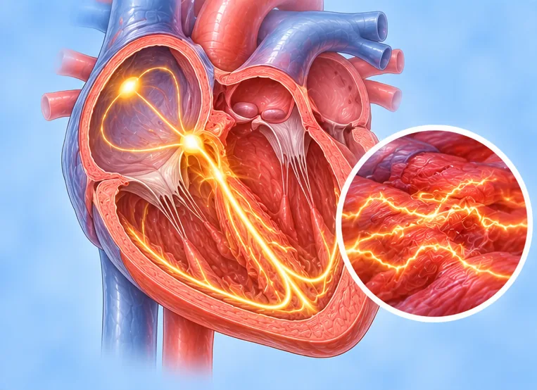

Racing heart with insomnia
Feeling the heart beat fast or hard, and finding it hard to fall or stay asleep
What it is
A racing or pounding heartbeat and poor sleep often happen together, and each can make the other worse. It is often linked to stress or worry.
- Chest and mind
- Often in busy or stressed times
- Racing at night, poor sleep
- Which doctor
- Family doctor; heart doctor if it keeps happening
- Common in
- Adults under stress; also around menopause or with much caffeine
- Contagious
- No
- Course
- Often eases when stress and sleep improve; see a doctor if it lasts
Common signs

Racing, pounding heartPalpitations 
Cannot fall asleepInsomnia Worried and on edgeAnxiety 
Tired all the timeFatigue 
Foggy, cannot focusPoor concentration
Why it happens
StressPsychological stress 
SmokingTobacco use Hormone changesHormonal change 
A side effect of some medicinesAdverse drug effect
See a doctor first if
- Chest pain, trouble breathing, or fainting: call 999
- Thoughts of harming yourself: see a doctor now or call 999
- A heartbeat that stays very fast and does not settle
- Weight loss, heavy sweating or shaking hands along with it
- Poor sleep that goes on for weeks and affects daily life
If any apply, please see a doctor before a session.
This page is general information. Please keep taking your normal medicine and keep seeing your doctor.
Keep taking your normal medicine and keep seeing your doctor. Our session is a gentle support and does not replace medical care.
Looking after yourself
Cut down on coffee and teaLess caffeine
More ways to look after yourself
- Keep a regular bedtime and wake-up time
- Switch off screens an hour before bed and keep the room dark and quiet
- Breathe slowly, or talk to someone you trust about what worries you
- Gentle activity in the daytime, such as walking
Tell your therapist
- A heart condition
- Pregnancy
- Pacemaker or metal implant
- High blood pressure
Your therapist will go through this with you before starting.
Questions and answers
What is Racing heart with insomnia?
Feeling the heart beat fast or hard, and finding it hard to fall or stay asleep. A racing or pounding heartbeat and poor sleep often happen together, and each can make the other worse. It is often linked to stress or worry.
What are the common signs of Racing heart with insomnia?
Racing, pounding heart · Cannot fall asleep · Worried and on edge · Tired all the time · Foggy, cannot focus
Why does Racing heart with insomnia happen?
Stress · Smoking · Hormone changes · A side effect of some medicines
How can I look after myself with Racing heart with insomnia?
Cut down on coffee and tea
Can an AI Body Master session help with Racing heart with insomnia?
A session is gentle, needle-free meridian support for your wellbeing. It does not treat or cure Racing heart with insomnia and never replaces your medicine or your doctor. Tell your therapist about it before the session starts.
Related conditions
References: General information based on public health sources such as Mayo Clinic, NHS, Cleveland Clinic and NCBI StatPearls.
Page updated: 2026-11-01